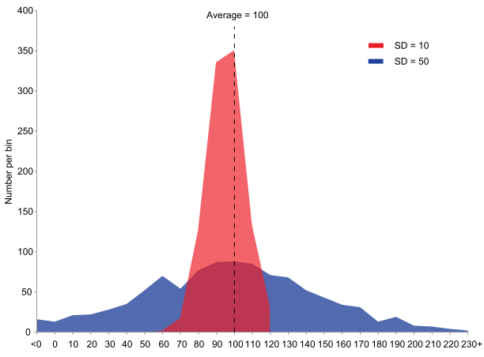
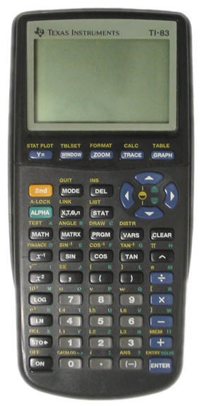
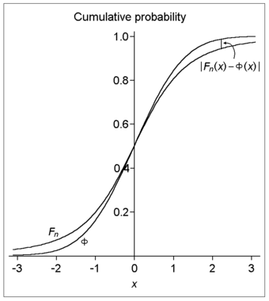
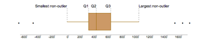
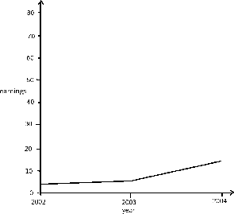
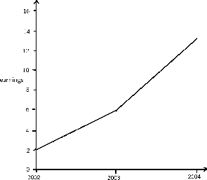
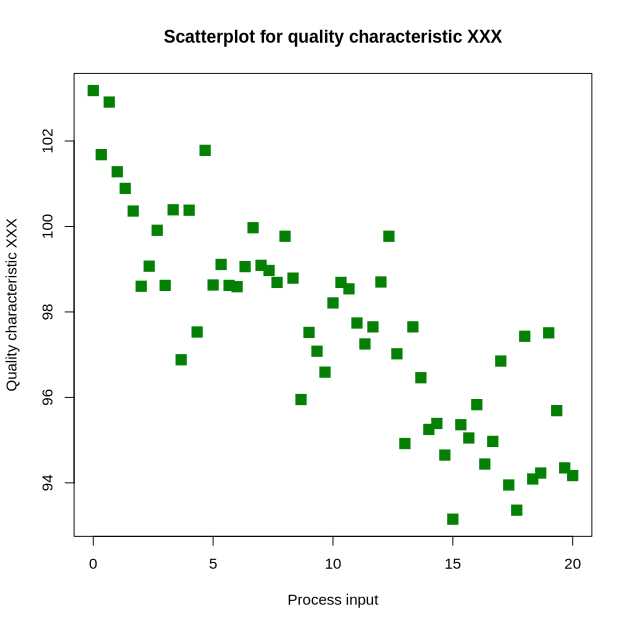

The range is a measure of the total spread of values in a quantitative dataset.
Interpret the range as the overall dispersion of values in a dataset
In statistics, the range is a measure of the total spread of values in a quantitative dataset. Unlike other more popular measures of dispersion, the range actually measures total dispersion (between the smallest and largest values) rather than relative dispersion around a measure of central tendency.
The range is interpreted as the overall dispersion of values in a dataset or, more literally, as the difference between the largest and the smallest value in a dataset. The range is measured in the same units as the variable of reference and, thus, has a direct interpretation as such. This can be useful when comparing similar variables but of little use when comparing variables measured in different units. However, because the information the range provides is rather limited, it is seldom used in statistical analyses.
For example, if you read that the age range of two groups of students is 3 in one group and 7 in another, then you know that the second group is more spread out (there is a difference of seven years between the youngest and the oldest student) than the first (which only sports a difference of three years between the youngest and the oldest student).
The mid-range of a set of statistical data values is the arithmetic mean of the maximum and minimum values in a data set, defined as:
The mid-range is the midpoint of the range; as such, it is a measure of central tendency. The mid-range is rarely used in practical statistical analysis, as it lacks efficiency as an estimator for most distributions of interest because it ignores all intermediate points. The mid-range also lacks robustness, as outliers change it significantly. Indeed, it is one of the least efficient and least robust statistics.
However, it finds some use in special cases:
Variance is the sum of the probabilities that various outcomes will occur multiplied by the squared deviations from the average of the random variable.
Calculate variance to describe a population
When describing data, it is helpful (and in some cases necessary) to determine the spread of a distribution. In describing a complete population, the data represents all the elements of the population. When determining the spread of the population, we want to know a measure of the possible distances between the data and the population mean. These distances are known as deviations.
The variance of a data set measures the average square of these deviations. More specifically, the variance is the sum of the probabilities that various outcomes will occur multiplied by the squared deviations from the average of the random variable. When trying to determine the risk associated with a given set of options, the variance is a very useful tool.
Calculating the variance begins with finding the mean. Once the mean is known, the variance is calculated by finding the average squared deviation of each number in the sample from the mean. For the numbers 1, 2, 3, 4, and 5, the mean is 3. The calculation for finding the mean is as follows:
Once the mean is known, the variance can be calculated. The variance for the above set of numbers is:
$\displaystyle \sigma^2 = \frac{(1-3)^2 + (2-3)^2 + (3-3)^2 + (4-3)^2 + (5-3)^2}{5}$
A clear distinction should be made between dealing with the population or with a sample from it. When dealing with the complete population the (population) variance is a constant, a parameter which helps to describe the population. When dealing with a sample from the population the (sample) variance is actually a random variable, whose value differs from sample to sample.
The population variance can be very helpful in analyzing data of various wildlife populations.
Standard deviation is a measure of the average distance between the values of the data in the set and the mean.
Contrast the usefulness of variance and standard deviation
Since the variance is a squared quantity, it cannot be directly compared to the data values or the mean value of a data set. It is therefore more useful to have a quantity that is the square root of the variance. The standard error is an estimate of how close to the population mean your sample mean is likely to be, whereas the standard deviation is the degree to which individuals within the sample differ from the sample mean. This quantity is known as the standard deviation.
Standard deviation (represented by the symbol sigma, $\sigma$ ) shows how much variation or dispersion exists from the average (mean), or expected value. More precisely, it is a measure of the average distance between the values of the data in the set and the mean. A low standard deviation indicates that the data points tend to be very close to the mean; a high standard deviation indicates that the data points are spread out over a large range of values. A useful property of standard deviation is that, unlike variance, it is expressed in the same units as the data.
In statistics, the standard deviation is the most common measure of statistical dispersion. However, in addition to expressing the variability of a population, standard deviation is commonly used to measure confidence in statistical conclusions. For example, the margin of error in polling data is determined by calculating the expected standard deviation in the results if the same poll were to be conducted multiple times.
Consider a population consisting of the following eight values:
2, 4, 4, 4, 5, 5, 7, 9
These eight data points have a mean (average) of 5:
To calculate the population standard deviation, first compute the difference of each data point from the mean, and square the result of each:
Next, compute the average of these values, and take the square root:
This quantity is the population standard deviation, and is equal to the square root of the variance. The formula is valid only if the eight values we began with form the complete population. If the values instead were a random sample drawn from some larger parent population, then we would have divided by 7 (which is $n-1$ ) instead of 8 (which is $n$ ) in the denominator of the last formula, and then the quantity thus obtained would be called the sample standard deviation.
The sample standard deviation, $s$ , is a statistic known as an estimator. In cases where the standard deviation of an entire population cannot be found, it is estimated by examining a random sample taken from the population and computing a statistic of the sample. Unlike the estimation of the population mean, for which the sample mean is a simple estimator with many desirable properties (unbiased, efficient, maximum likelihood), there is no single estimator for the standard deviation with all these properties. Therefore, unbiased estimation of standard deviation is a very technically involved problem.
As mentioned above, most often the standard deviation is estimated using the corrected sample standard deviation (using $N-1$ ). However, other estimators are better in other respects:
The mean and the standard deviation of a set of data are usually reported together. In a certain sense, the standard deviation is a "natural" measure of statistical dispersion if the center of the data is measured about the mean. This is because the standard deviation from the mean is smaller than from any other point. Variability can also be measured by the coefficient of variation, which is the ratio of the standard deviation to the mean.
Often, we want some information about the precision of the mean we obtained. We can obtain this by determining the standard deviation of the sampled mean, which is the standard deviation divided by the square root of the total amount of numbers in a data set:
Dark blue is one standard deviation on either side of the mean. For the normal distribution, this accounts for 68.27 percent of the set; while two standard deviations from the mean (medium and dark blue) account for 95.45 percent; three standard deviations (light, medium, and dark blue) account for 99.73 percent; and four standard deviations account for 99.994 percent.
The practical value of understanding the standard deviation of a set of values is in appreciating how much variation there is from the mean.
Derive standard deviation to measure the uncertainty in daily life examples
A large standard deviation, which is the square root of the variance, indicates that the data points are far from the mean, and a small standard deviation indicates that they are clustered closely around the mean. For example, each of the three populations $\{0, 0, 14, 14\}$ , $\{0, 6, 8, 14\}$ , and $\{6, 6, 8, 8\}$ has a mean of 7. Their standard deviations are 7, 5, and 1, respectively. The third population has a much smaller standard deviation than the other two because its values are all close to 7.
Standard deviation may serve as a measure of uncertainty. In physical science, for example, the reported standard deviation of a group of repeated measurements gives the precision of those measurements. When deciding whether measurements agree with a theoretical prediction, the standard deviation of those measurements is of crucial importance. If the mean of the measurements is too far away from the prediction (with the distance measured in standard deviations), then the theory being tested probably needs to be revised. This makes sense since they fall outside the range of values that could reasonably be expected to occur, if the prediction were correct and the standard deviation appropriately quantified.
The practical value of understanding the standard deviation of a set of values is in appreciating how much variation there is from the average (mean).
As a simple example, consider the average daily maximum temperatures for two cities, one inland and one on the coast. It is helpful to understand that the range of daily maximum temperatures for cities near the coast is smaller than for cities inland. Thus, while these two cities may each have the same average maximum temperature, the standard deviation of the daily maximum temperature for the coastal city will be less than that of the inland city as, on any particular day, the actual maximum temperature is more likely to be farther from the average maximum temperature for the inland city than for the coastal one.
Another way of seeing it is to consider sports teams. In any set of categories, there will be teams that rate highly at some things and poorly at others. Chances are, the teams that lead in the standings will not show such disparity but will perform well in most categories. The lower the standard deviation of their ratings in each category, the more balanced and consistent they will tend to be. Teams with a higher standard deviation, however, will be more unpredictable.
Example of two samples with the same mean and different standard deviations. The red sample has a mean of 100 and a SD of 10; the blue sample has a mean of 100 and a SD of 50. Each sample has 1,000 values drawn at random from a Gaussian distribution with the specified parameters.
For advanced calculating and graphing, it is often very helpful for students and statisticians to have access to statistical calculators.
Analyze the use of R statistical software and TI-83 graphing calculators
For many advanced calculations and/or graphical representations, statistical calculators are often quite helpful for statisticians and students of statistics. Two of the most common calculators in use are the TI-83 series and the R statistical software environment.
The TI-83 series of graphing calculators, shown in , is manufactured by Texas Instruments. Released in 1996, it was one of the most popular graphing calculators for students. In addition to the functions present on normal scientific calculators, the TI-83 includes many andvanced features, including function graphing, polar/parametric/sequence graphing modes, statistics, trigonometric, and algebraic functions, along with many useful applications.
The TI-83 series of graphing calculators is one of the most popular calculators for statistics students.
The TI-83 has a handy statistics mode (accessed via the "STAT" button) that will perform such functions as manipulation of one-variable statistics, drawing of histograms and box plots, linear regression, and even distribution tests.
R (logo shown in ) is a free software programming language and a software environment for statistical computing and graphics. The R language is widely used among statisticians and data miners for developing statistical software and data analysis. Polls and surveys of data miners are showing R's popularity has increased substantially in recent years.
R is an implementation of the S programming language, which was created by John Chambers while he was at Bell Labs. R was created by Ross Ihaka and Robert Gentleman at the University of Auckland, New Zealand, and is currently developed by the R Development Core Team, of which Chambers is a member. R is a GNU project, which means it's source code is freely available under the GNU General Public License.
R provides a wide variety of statistical and graphical techniques, including linear and nonlinear modeling, classical statistical tests, time-series analysis, classification, and clustering. Another strength of R is static graphics, which can produce publication-quality graphs, including mathematical symbols. Dynamic and interactive graphics are available through additional packages.
R is easily extensible through functions and extensions, and the R community is noted for its active contributions in terms of packages. These packagers allow specialized statistical techniques, graphical devices, import/export capabilities, reporting tools, et cetera. Due to its S heritage, R has stronger object-oriented programming facilities than most statistical computing languages.
The number of degrees of freedom is the number of values in the final calculation of a statistic that are free to vary.
Outline an example of "degrees of freedom"
The number of independent ways by which a dynamical system can move without violating any constraint imposed on it is known as "degree of freedom. " The degree of freedom can be defined as the minimum number of independent coordinates that completely specify the position of the system.
Consider this example: To compute the variance, first sum the square deviations from the mean. The mean is a parameter, a characteristic of the variable under examination as a whole, and a part of describing the overall distribution of values. Knowing all the parameters, you can accurately describe the data. The more known (fixed) parameters you know, the fewer samples fit this model of the data. If you know only the mean, there will be many possible sets of data that are consistent with this model. However, if you know the mean and the standard deviation, fewer possible sets of data fit this model.
In computing the variance, first calculate the mean, then you can vary any of the scores in the data except one. This one score left unexamined can always be calculated accurately from the rest of the data and the mean itself.
As an example, take the ages of a class of students and find the mean. With a fixed mean, how many of the other scores (there are N of them remember) could still vary? The answer is N-1 independent pieces of information (degrees of freedom) that could vary while the mean is known. One piece of information cannot vary because its value is fully determined by the parameter (in this case the mean) and the other scores. Each parameter that is fixed during our computations constitutes the loss of a degree of freedom.
Imagine starting with a small number of data points and then fixing a relatively large number of parameters as we compute some statistic. We see that as more degrees of freedom are lost, fewer and fewer different situations are accounted for by our model since fewer and fewer pieces of information could, in principle, be different from what is actually observed.
Put informally, the "interest" in our data is determined by the degrees of freedom. If there is nothing that can vary once our parameter is fixed (because we have so very few data points, maybe just one) then there is nothing to investigate. Degrees of freedom can be seen as linking sample size to explanatory power.
The degrees of freedom are also commonly associated with the squared lengths (or "sum of squares" of the coordinates) of random vectors and the parameters of chi-squared and other distributions that arise in associated statistical testing problems.
In equations, the typical symbol for degrees of freedom is $\nu$ (lowercase Greek letter nu). In text and tables, the abbreviation "d.f. " is commonly used.
In fitting statistical models to data, the random vectors of residuals are constrained to lie in a space of smaller dimension than the number of components in the vector. That smaller dimension is the number of degrees of freedom for error. In statistical terms, a random vector is a list of mathematical variables each of whose value is unknown, either because the value has not yet occurred or because there is imperfect knowledge of its value. The individual variables in a random vector are grouped together because there may be correlations among them. Often they represent different properties of an individual statistical unit (e.g., a particular person, event, etc.).
A residual is an observable estimate of the unobservable statistical error. Consider an example with men's heights and suppose we have a random sample of n people. The sample mean could serve as a good estimator of the population mean. The difference between the height of each man in the sample and the observable sample mean is a residual. Note that the sum of the residuals within a random sample is necessarily zero, and thus the residuals are necessarily not independent.
Perhaps the simplest example is this. Suppose X1,...,Xn are random variables each with expected value μ, and let
be the "sample mean. " Then the quantities
are residuals that may be considered estimates of the errors Xi − μ. The sum of the residuals is necessarily 0. If one knows the values of any n − 1 of the residuals, one can thus find the last one. That means they are constrained to lie in a space of dimension n − 1, and we say that "there are n − 1 degrees of freedom for error. "
This image illustrates the difference (or distance) between the cumulative distribution functions of the standard normal distribution (Φ) and a hypothetical distribution of a standardized sample mean (Fn). Specifically, the plotted hypothetical distribution is a t distribution with 3 degrees of freedom.
The interquartile range (IQR) is a measure of statistical dispersion, or variability, based on dividing a data set into quartiles.
Calculate interquartile range based on a given data set
The interquartile range (IQR) is a measure of statistical dispersion, or variability, based on dividing a data set into quartiles. Quartiles divide an ordered data set into four equal parts. The values that divide these parts are known as the first quartile, second quartile and third quartile (Q1, Q2, Q3). The interquartile range is equal to the difference between the upper and lower quartiles:
IQR = Q3 − Q1
It is a trimmed estimator, defined as the 25% trimmed mid-range, and is the most significant basic robust measure of scale. As an example, consider the following numbers:
1, 13, 6, 21, 19, 2, 137
Put the data in numerical order: 1, 2, 6, 13, 19, 21, 137
Find the median of the data: 13
Divide the data into four quartiles by finding the median of all the numbers below the median of the full set, and then find the median of all the numbers above the median of the full set.
To find the lower quartile, take all of the numbers below the median: 1, 2, 6
Find the median of these numbers: take the first and last number in the subset and add their positions (not values) and divide by two. This will give you the position of your median:
1+3 = 4/2 = 2
The median of the subset is the second position, which is two. Repeat with numbers above the median of the full set: 19, 21, 137. Median is 1+3 = 4/2 = 2nd position, which is 21. This median separates the third and fourth quartiles.
Subtract the lower quartile from the upper quartile: 21-2=19. This is the Interquartile range, or IQR.
If there is an even number of values, then the position of the median will be in between two numbers. In that case, take the average of the two numbers that the median is between. Example: 1, 3, 7, 12. Median is 1+4=5/2=2.5th position, so it is the average of the second and third positions, which is 3+7=10/2=5. This median separates the first and second quartiles.
Unlike (total) range, the interquartile range has a breakdown point of 25%. Thus, it is often preferred to the total range. In other words, since this process excludes outliers, the interquartile range is a more accurate representation of the "spread" of the data than range.
The IQR is used to build box plots, which are simple graphical representations of a probability distribution. A box plot separates the quartiles of the data. All outliers are displayed as regular points on the graph. The vertical line in the box indicates the location of the median of the data. The box starts at the lower quartile and ends at the upper quartile, so the difference, or length of the boxplot, is the IQR.
On this boxplot in , the IQR is about 300, because Q1 starts at about 300 and Q3 ends at 600, and 600 - 300 = 300.
The IQR is used to build box plots, which are simple graphical representations of a probability distribution.
In a boxplot, if the median (Q2 vertical line) is in the center of the box, the distribution is symmetrical. If the median is to the left of the data (such as in the graph above), then the distribution is considered to be skewed right because there is more data on the right side of the median. Similarly, if the median is on the right side of the box, the distribution is skewed left because there is more data on the left side.
The range of this data is 1,700 (biggest outlier) - 500 (smallest outlier) = 2,200. If you wanted to leave out the outliers for a more accurate reading, you would subtract the values at the ends of both "whiskers:"
1,000 - 0 = 1,000
To calculate whether something is truly an outlier or not you use the formula 1.5 x IQR. Once you get that number, the range that includes numbers that are not outliers is [Q1 - 1.5(IQR), Q3 + 1.5(IQR)]. Anything lying outside those numbers are true outliers.
Variability for qualitative data is measured in terms of how often observations differ from one another.
Assess the use of IQV in measuring statistical dispersion in nominal distributions
The study of statistics generally places considerable focus upon the distribution and measure of variability of quantitative variables. A discussion of the variability of qualitative--or categorical-- data can sometimes be absent. In such a discussion, we would consider the variability of qualitative data in terms of unlikeability. Unlikeability can be defined as the frequency with which observations differ from one another. Consider this in contrast to the variability of quantitative data, which ican be defined as the extent to which the values differ from the mean. In other words, the notion of "how far apart" does not make sense when evaluating qualitative data. Instead, we should focus on the unlikeability.
In qualitative research, two responses differ if they are in different categories and are the same if they are in the same category. Consider two polls with the simple parameters of "agree" or "disagree. " These polls question 100 respondents. The first poll results in 75 "agrees" while the second poll only results in 50 "agrees. " The first poll has less variability since more respondents answered similarly.
An index of qualitative variation (IQV) is a measure of statistical dispersion in nominal distributions--or those dealing with qualitative data. The following standardization properties are required to be satisfied:
In particular, the value of these standardized indices does not depend on the number of categories or number of samples. For any index, the closer to uniform the distribution, the larger the variance, and the larger the differences in frequencies across categories, the smaller the variance.
The variation ratio is a simple measure of statistical dispersion in nominal distributions. It is the simplest measure of qualitative variation. It is defined as the proportion of cases which are not the mode:
Just as with the range or standard deviation, the larger the variation ratio, the more differentiated or dispersed the data are; and the smaller the variation ratio, the more concentrated and similar the data are.
For example, a group which is 55% female and 45% male has a proportion of 0.55 females and, therefore, a variation ratio of:
This group is more dispersed in terms of gender than a group which is 95% female and has a variation ratio of only 0.05. Similarly, a group which is 25% Catholic (where Catholic is the modal religious preference) has a variation ratio of 0.75. This group is much more dispersed, religiously, than a group which is 85% Catholic and has a variation ratio of only 0.15.
Descriptive statistics can be manipulated in many ways that can be misleading, including the changing of scale and statistical bias.
Assess the significance of descriptive statistics given its limitations
Descriptive statistics can be manipulated in many ways that can be misleading. Graphs need to be carefully analyzed, and questions must always be asked about "the story behind the figures. " Potential manipulations include:
As an example of changing the scale of a graph, consider the following two figures, and .
In this graph, the earnings scale is greater.
This is a graph plotting yearly earnings.
Both graphs plot the years 2002, 2003, and 2004 along the x-axis. However, the y-axis of the first graph presents earnings from "0 to 10," while the y-axis of the second graph presents earnings from "0 to 30. " Therefore, there is a distortion between the two of the rate of increased earnings.
Bias is another common distortion in the field of descriptive statistics. A statistic is biased if it is calculated in such a way that is systematically different from the population parameter of interest. The following are examples of statistical bias.
Descriptive statistics is a powerful form of research because it collects and summarizes vast amounts of data and information in a manageable and organized manner. Moreover, it establishes the standard deviation and can lay the groundwork for more complex statistical analysis.
However, what descriptive statistics lacks is the ability to:
To illustrate you can use descriptive statistics to calculate a raw GPA score, but a raw GPA does not reflect:
In other words, every time you try to describe a large set of observations with a single descriptive statistics indicator, you run the risk of distorting the original data or losing important detail.
Exploratory data analysis is an approach to analyzing data sets in order to summarize their main characteristics, often with visual methods.
Explain how the techniques of EDA achieve its objectives
Exploratory data analysis (EDA) is an approach to analyzing data sets in order to summarize their main characteristics, often with visual methods. It is a statistical practice concerned with (among other things):
Primarily, EDA is for seeing what the data can tell us beyond the formal modeling or hypothesis testing task. EDA is different from initial data analysis (IDA), which focuses more narrowly on checking assumptions required for model fitting and hypothesis testing, handling missing values, and making transformations of variables as needed. EDA encompasses IDA.
Exploratory data analysis was promoted by John Tukey to encourage statisticians to explore the data and possibly formulate hypotheses that could lead to new data collection and experiments. Tukey's EDA was related to two other developments in statistical theory: robust statistics and nonparametric statistics. Both of these try to reduce the sensitivity of statistical inferences to errors in formulating statistical models. Tukey promoted the use of the five number summary of numerical data:
His reasoning was that the median and quartiles, being functions of the empirical distribution, are defined for all distributions, unlike the mean and standard deviation. Moreover, the quartiles and median are more robust to skewed or heavy-tailed distributions than traditional summaries (the mean and standard deviation).
Exploratory data analysis, robust statistics, and nonparametric statistics facilitated statisticians' work on scientific and engineering problems. Such problems included the fabrication of semiconductors and the understanding of communications networks. These statistical developments, all championed by Tukey, were designed to complement the analytic theory of testing statistical hypotheses.
Tukey held that too much emphasis in statistics was placed on statistical hypothesis testing (confirmatory data analysis) and more emphasis needed to be placed on using data to suggest hypotheses to test. In particular, he held that confusing the two types of analyses and employing them on the same set of data can lead to systematic bias owing to the issues inherent in testing hypotheses suggested by the data.
Subsequently, the objectives of EDA are to:
Although EDA is characterized more by the attitude taken than by particular techniques, there are a number of tools that are useful. Many EDA techniques have been adopted into data mining and are being taught to young students as a way to introduce them to statistical thinking. Typical graphical techniques used in EDA are:
These EDA techniques aim to position these plots so as to maximize our natural pattern-recognition abilities. A clear picture is worth a thousand words!
A scatter plot is one visual statistical technique developed from EDA.
{kind=link}
{kind=link}
{kind=link}
{kind=link}
{kind=link}
{kind=link}
{kind=link}
{kind=link}
{kind=link}